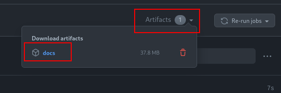

Developer Documentation¶
Scanpy provides extensive developer documentation, most of which applies to Scirpy, too. This document will not reproduce the entire content from there. Instead, it aims at summarizing the most important information to get you started on contributing to scirpy.
Getting set-up¶
We assume that you are already familiar with git and with making pull requests on GitHub. If not please, refer to the Scanpy developer documentation.
Installing additional dependencies¶
In addition to Scipy’s runtime dependencies you need additional python packages to run the tests and building the documentation. It’s easy to install them using pip:
pip install scirpy[test,doc]
Formatting code¶
All Python code needs to be formatted using black. If the code is not formatted correctly, the continuous integration (CI) checks will fail.
We recommend setting up the pre-commit hook that automatically formats the code on every commit.
# inside root of scirpy repository
pre-commit install
Alternatively, you can manually run black by running
black .
Most IDEs also have an “autoformat on save” feature. Please refer to the black documentation on how to enable it.
Running tests¶
Scirpy uses automated testing with pytest. All tests need to pass before we can merge a pull request. If you add new functionality, please add tests
Most IDEs integrate with pytest and provide a GUI to run tests. Alternatively, you can run all tests from the command line by executing
pytest
in the root of the scirpy repository.
Previewing the docs¶
Updates to the documentation are automatically built by the CI for every PR. Once the PR is merged they will be automatically published on the documentation website.
The easiest way to preview changes to the documentation is to download the CI artifact:
Click on “Details” on one of the CI jobs building the docs:

Download the artifact from the top right corner.
Extract the zip file and open
index.htmlin your Browser.
Alternatively, you can build and preview the documentation locally:
cd docs
make html
# open the docs in the web browser, e.g.
firefox _build/html/index.html